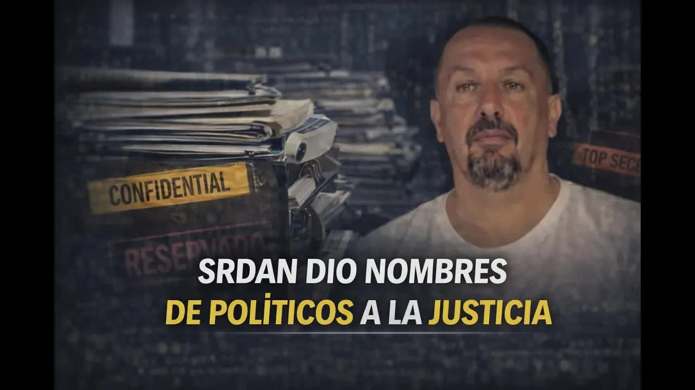
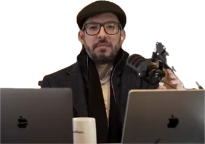
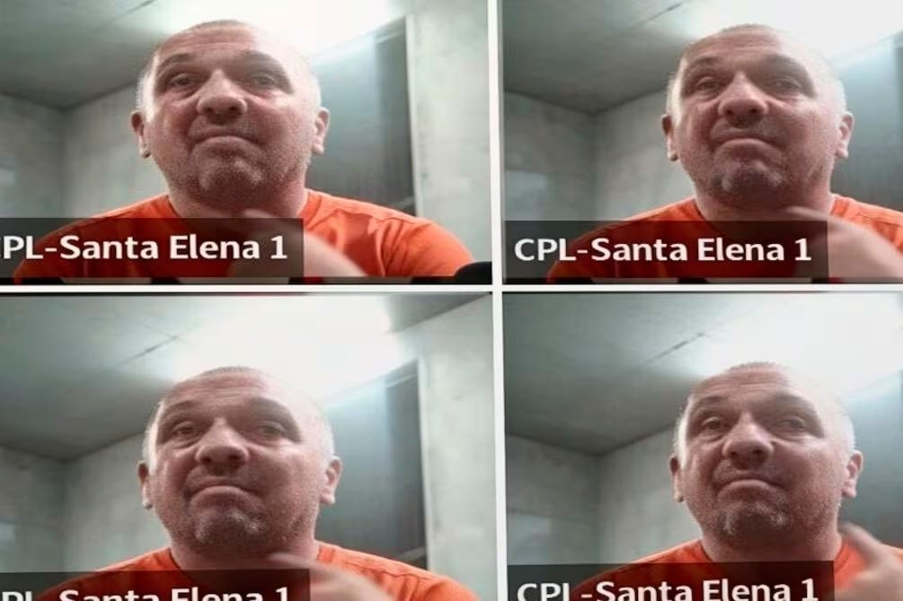
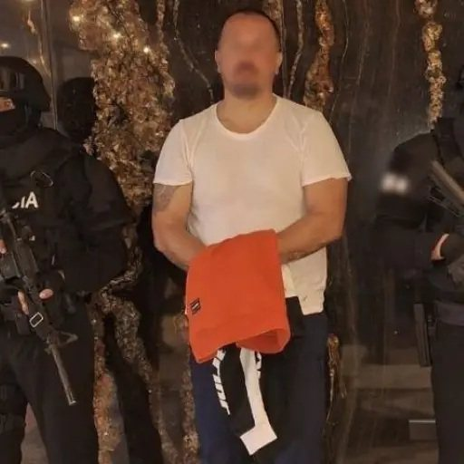
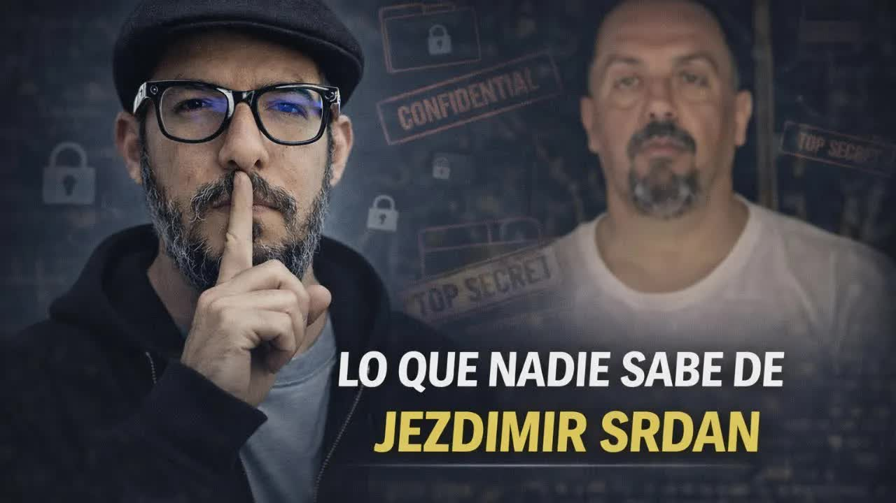

Feb 25, 2026 · The story of the Serbian and the cooperation agreement
 Cooperation agreement
Cooperation agreementPhoto: Srdán in the video he recorded from CPL Santa Elena 1 prison. Investigation material
Five hundred thirteen kilos of cocaine seized in a 2014 operation, a seventeen-year sentence, and release four years later. That case file was reopened with chats from the Sky app, translation work for a hitman in Vienna, and an arrest requested from Germany. Cornered, the Serbian at the center of the case signed a cooperation agreement with the Attorney General's Office (Fiscalía): names of politicians and cash for campaigns. That is where the audio recordings that brought down Mario Godoy came from. This is what the show reported.

Five hundred thirteen kilos of cocaine bound for Europe and a satellite phone. That is what they found on him in September 2014, in Operation Oro Blanco. The National Court of Justice sentenced him to 17 years and 4 months, and in 2018 he walked free. He went back into the business with Sky, the Balkan mafia's encrypted app, and in March 2020 he turned up in the messages of an attempted murder in Vienna: he was translating for the Colombian hitman the victim's location, the escape routes and how to get rid of the gun. France intercepted Sky, and the German police sent the chats to Ecuadorian prosecutors and told them how to arrest him. Cornered over drug trafficking and money laundering, he signed a cooperation agreement: he named politicians and stated that he had handed over cash for campaigns. What he said about each of them remains confidential at the Attorney General's Office.

To understand the case you have to understand who he is. Serbian-Bosnian, born in 1979, he lived through the Bosnian war between 1992 and 1995 at 15 or 16 years old. His fellow inmates from 2014 told Boscán that he needed pills almost every day to sleep and that he preferred the floor or a corner to a bed. Tall, heavyset, intimidating. He speaks at least five languages: Serbian, Bosnian, Spanish, English and one more. He married a lawyer.
He arrived in the country around 2012. His father had won a lawsuit in Europe against some duty-free shops in Bosnia, and the ruling left him about four million dollars. The family's idea was to invest in banana plantations and export to Serbia. Srdán presented himself as a successful athlete with contacts in his country's politics and economy. Boscán could not confirm those contacts, but they appear in the statements about him in Ecuador, Germany, Austria and France, the countries where he has been investigated.
The case dragged on. In October 2015 he was sentenced to six years as an accomplice. In January 2017 the National Court of Justice corrected that: 17 years and 4 months. In 2018 Judge Roca reduced the sentence to ten years with early release, and that same year, with María Paula Romo at the Interior Ministry, Judge Martínez declared the sentence extinguished and freed him. He could not leave the country: he had an Interpol red notice and feared being captured somewhere else. He stayed in Ecuador.
People go in for one crime and come out with a PhD in criminology.
Andersson Boscán, February 25, 2026
Between 2019 and 2022 he was productive on the street again. Not only with the Serbian contacts that had landed him in prison, but with the people he met behind bars. In 2019 he started using Sky.
Every mafia has its secret app. Mexicans and Ecuadorians use Sanji; Albanians and Balkan groups, Sky. Sky had only 70,000 registered users, and almost all of them were traffickers. France intercepted the network between 2020 and 2021, captured about a million messages and let the users keep talking for almost two years before it began prosecuting them. Srdán was one of them.

Meanwhile, something happened in Austria. In March 2020 there was an attempted murder in Vienna against a Balkan mafia boss. The plan was organized by Stefan Kovac and Risto Milanovic, of a Montenegrin clan. They hired hitmen, and the main one was John Alexander Zapata Zuluaga, a Colombian who spoke only Spanish. Srdán, who speaks five languages, was hired as translator. European police have the messages in which he translates for the Colombian the victim's location, the escape routes, the vehicles he was to use and how to get rid of the gun.
The attack took place on March 11, 2020, and failed because of communication problems: the hitman did not understand, the target escaped and the police discovered them. Austria issued an arrest warrant for Srdán, whom it identifies by the alias Setović Milenko, for attempted murder. Kovac and Milanovic, who ordered the crime, were later murdered in Austria.
The Ecuadorian case grew out of that police cooperation. It was the German police who sent the confidential chats to Ecuadorian prosecutors and told them how to arrest him. For a year the case file was in the hands of a prosecutor surnamed Rosero, whom Boscán's sources describe as honest, and it was he who established Srdán's identity. They identified him by his Sky PIN and by a rookie mistake: he used a secret app, but he took photos of himself and sent them. They investigated the man in the photo.
Felipe Rodríguez brought it to the public's attention around December 5, 2025, in a column titled The brave are alone, like Roberto Saviano's book about Judge Giovanni Falcone. He reported that Judge Carlos Serrano had been threatened at a hearing by a Serbian drug trafficker and that the Judiciary Council, especially Mario Godoy, had ignored that threat: emissaries from the Judiciary Council had gone to plead with him on Srdán's behalf. Boscán jumped on it the same day, and on December 21, 2025, he published the audio recordings of an emissary from the Judiciary Council pressuring Judge Serrano to release Jezdimir Srdán. That is when the name of the case became known, Euro 2024: Srdán had admitted guilt on drug trafficking and was contesting the money laundering charge.
What went under the radar until January 2026 is that Dolores Vintimilla, Godoy's wife, was Srdán's lawyer. On the very day of the raid and his arrest for drug trafficking, according to information Boscán gathered, Vintimilla told him she could no longer represent him: her then fiancé, Mario Godoy, was about to formally become president of the Judiciary Council, and a drug trafficking case put her in an awkward position. She quit that day, but not before collecting what she was owed.
Srdán had to find a lawyer that day and find out why he was being investigated. It was for money laundering: he had shrimp farms, properties, significant assets and a loan of about a million and a half dollars from a German company that prosecutors suspect is not really a loan. With drug trafficking and money laundering together, prosecutors showed him the Sky chats. Those present at the proceeding told Boscán there was surprise on his face: it was him, he had taken the photos, he could not deny it.
Weeks later prosecutors extracted the data from his devices and found that Srdán had a network set up inside the police that tipped him off about the investigations against him, the routes on which he would be followed and which cars were assigned to tail him. On the phone was the tracking of the drugs: videos of the packages placed in the containers, with that day's newspaper on top as proof of date, and the proof of receipt on the other side of the ocean.
When the police want to prove you're a trafficker, the drugs that didn't get through matter more than the ones that did.
Andersson Boscán, February 25, 2026
In the chats Srdán talked about seized shipments, and that is what serves to bring charges. The police report determined that he lost at least two containers checked by customs at the port of Antwerp. The case file lists three: MEDU 9137281, from 2020, seized with 45 kilos of cocaine, shipped from Guayaquil; another with 488 kilos, on February 4, 2021; and a third, also in Antwerp. Boscán was on volume 200 of a case file that, he said, no journalist had read in full.
That week El Universo reported that the chats contained mentions of two politicians. In a 2021 conversation between Srdán and alias Odín, Naula, his right-hand man, Andrés Arauz appeared as someone being given a car, along with a photograph of Francisco Jiménez and the phrase we can also count on this one. The story's reading, based on the police investigation, is that in 2021 the Balkan mafia was betting on UNES, the correísta movement, and on CREO, Guillermo Lasso's party, which won those elections.
Watch the words I choose: mentions, not a relationship.
Andersson Boscán, February 25, 2026
What no one had said, and what Boscán and Mónica Velásquez confirmed with multiple police and judicial sources, is that Srdán signed a cooperation agreement with Ecuadorian prosecutors. He has already spoken before the courts. That agreement contains the names of Ecuadorian politicians, among them Andrés Arauz and Francisco Jiménez, and he names other people. The information he provided includes having handed over cash for campaigns. Whose campaign, what he accuses them of, with what evidence: that remains confidential. The agreement was authorized by Diana Salazar, who was not handling the case but personally approved that kind of deal.
A cooperation agreement in Ecuador means four things. First, the cooperator admits guilt for a crime. Second, he provides information about the criminal structure that is of interest to prosecutors. Third, it is confidential, and for now it remains so. Fourth, prosecutors can reward him with up to a 90 percent sentence reduction: if he was facing ten years, one. What he said will have to be substantiated at a hearing with messages, photos, videos or documents.
With money from a lawsuit his father won in Europe, about four million. The idea was to invest in bananas.
Arrested with 513 kilos of cocaine bound for Europe and a satellite phone. A year earlier he was already the subject of a preliminary inquiry.
The first sentence, in October 2015, gave him six years as an accomplice. The National Court raises it to 17 years and 4 months.
Judge Roca reduces the sentence to ten years with early release; Judge Martínez declares it extinguished and frees him. He stays in Ecuador because of the Interpol red notice.
Starts using the Balkan mafia's encrypted app with contacts made in prison. France will intercept its 70,000 users.
The attempted murder for which he translated instructions to the Colombian hitman fails. Austria wants him for attempted murder.
With Sky intercepted, 45 kilos are seized in Antwerp in 2020 and 488 kilos on February 4, 2021, shipped from Guayaquil.
Germany handed the chats to Ecuadorian prosecutors; prosecutor Rosero identifies him by his PIN. On the day of the arrest, Dolores Vintimilla drops his defense and collects 42,000 dollars for the Invictus law firm.
Boscán and Velásquez confirm the cooperation agreement, authorized by Diana Salazar, with names of politicians and cash for campaigns.
Warrant issued for the attempted murder in Vienna. Serbia does not want him; in Austria, Boscán says, his life is in danger.
What he said will have to be substantiated at a hearing with messages, photos, videos or documents. Which campaigns the money went to and what he accuses each person of remains confidential.
Arauz and Jiménez have flatly denied knowing Srdán, having any relationship with him or having received his money. Arauz attributed the mentions to his political positions; Boscán was unable to reach him. Jiménez did respond, the night before the show.
Good evening, Andersson. I don't know that gentleman, I have no record of him having contacted me, and I have never received financing from people outside my circle.
Francisco Jiménez, message to Andersson Boscán, February 24, 2026
Boscán disagrees with the police and prosecutors, who present Srdán as the great Balkan kingpin in Ecuador. In the case file he gives instructions to very few people, among them Odín, Naula, his main operator and employee, the one who talks about Arauz's car and assembly member Jiménez. Srdán acted as translator and middleman: he bought from the producer and sold to the Balkan buyer. He worked for someone with more and better contacts, a Serbian-Ecuadorian surnamed Kolaković, who got out of prison and whom neither the police nor prosecutors are looking for. The structure also includes an Albanian, Perparim, and alias Pantera, whose identity is unknown.
Pantera matters because he has direct contact with Colonel Chávez, probably an alias: the senior National Police commander who, according to the case file, instructed port units how, when and where to contaminate the containers. That is what the Balkan mafia in Ecuador is, a container contamination team: the drugs produced by the cartels, guarded by Ecuadorian organized crime groups, are loaded into containers and shipped mainly to Antwerp, and also to Rotterdam and other European ports.
Reconstruction based on the prosecutor's case file that Boscán read on air. He was on volume 200.
The Srdán case did not end with Srdán. The Serbian drug trafficker triggered Mario Godoy's fall from the presidency of the Judiciary Council, now headed by Damián Larco. On February 24, 2026, the full Judiciary Council unanimously removed two judges from the anti-corruption unit implicated in the Fachada case, Gabriela Lara Tello and Cristian Quito, who were under investigation for favoring the leader of Comandos de la Frontera; about 90,000 dollars had been found in a shoebox belonging to Lara. Boscán had been reporting since December that Lara had ruled in favor of the Serbian trafficker's interests. The third judge in the case, Jairo García, remains in his post.

Srdán remains in custody in Ecuador with an extradition order to Austria for attempted murder. His cooperation agreement is signed and confidential. Prosecutors will have to lift the seal at some point, and he will have to substantiate what he said at a hearing. Boscán knows who was present at that proceeding. He announced that he would keep reading the case file with Mónica Velásquez and would show the conversations.
The most important part, he summed up, is in the hands of prosecutors: the chats in which Ecuadorian police officers inform drug traffickers about investigations and in which senior commanders tell the traffickers how, when and where to contaminate the containers. Kolaković, Pantera and Colonel Chávez are the names to look at if the country wants to dismantle the structure. No one is looking for them.
Srdán was not the great kingpin of the Balkan mafia, but its translator and middleman. And he has signed a cooperation agreement with the Attorney General's Office.
Andersson Boscán, February 25, 2026
Updated September 5, 2026
Serbian-Bosnian. Lives through the Bosnian war (1992-1995) at 15 or 16 years old.
With money from a lawsuit his father won in Europe, about four million. The idea was to invest in bananas.
The police already have him in their sights a year after he arrives.
Arrested with 513 kilos of cocaine bound for Europe and a satellite phone.
Six years as an accomplice.
The National Court of Justice sentences him to 17 years and 4 months.
Judge Roca reduces the sentence to ten years with early release; Judge Martínez declares it extinguished and frees him. He stays in Ecuador because of the Interpol red notice.
Starts using the Balkan mafia's encrypted app. Gets back into the business with prison contacts.
The attempted murder for which he translated instructions to the Colombian hitman fails. Austria wants him for attempted murder.
Almost a million messages from 70,000 users. Containers are seized in Antwerp: 45 kilos in 2020, 488 kilos on February 4, 2021.
Conversations with alias Odín mention Andrés Arauz and Francisco Jiménez. The mafia bets on UNES and CREO.
Germany handed the chats to Ecuadorian prosecutors; prosecutor Rosero identifies him. On the day of the arrest, Dolores Vintimilla drops his defense and collects 42,000 dollars for the Invictus law firm.
Felipe Rodríguez reports in his column that Judge Carlos Serrano was threatened by the Serbian and that Godoy's Judiciary Council sent emissaries to plead on his behalf.
Boscán publishes the audio recordings of an emissary from the Judiciary Council pressuring Judge Serrano to release Srdán.
It emerges that Vintimilla, Godoy's wife, was Srdán's lawyer. Godoy falls from the Judiciary Council.
Publishes the mentions of Arauz and Jiménez in the Sky chats.
Damián Larco's Judiciary Council removes Gabriela Lara and Cristian Quito, judges in the Fachada case.
Boscán and Velásquez confirm Srdán's cooperation agreement, authorized by Diana Salazar, with names of politicians and cash for campaigns.
Serbian-Bosnian, 46. Alias Brate. Translator and middleman for the Balkan mafia in Ecuador. Cooperating witness.
Former president of the Judiciary Council. Partner in the Invictus law firm, which collected 42,000 dollars from Srdán.
Srdán's lawyer until the day of his arrest. Godoy's wife.
Judge threatened by Srdán at a hearing and pressured by emissaries from the Judiciary Council to release him.

Former attorney general. Authorized Srdán's cooperation agreement.
Former presidential candidate. Mentioned in the chats in connection with a car and named in the cooperation agreement.
Assembly member. Mentioned in the chats with a photo and named in the cooperation agreement.
Srdán's main operator and employee in Ecuador. He asked for the money for political relations.
Anti-corruption judge. Boscán reported that she ruled in the Serbian's favor. Fachada case.
Lawyer and columnist. His column The brave are alone exposed the threat against Judge Serrano.
Photos via Wikimedia Commons. Diana Salazar: Cesargoza (CC BY-SA 4.0).
Has publicly denied any closeness or relationship with Srdán, having received money from him or used his vehicles, and attributes the mentions to his political positions. Boscán tried to reach him without success.
Responded by message on the night of February 24, 2026: he does not know that gentleman, has no record of him having contacted him, and has never received financing from people outside his circle.


That's what this this morning's story is about. Será has given names. He has given names. So to talk about the Serjan case. You have to understand who Serjan is. And I've spent days uh gathering information, trying to understand who he is, how he operated, and so I think I have enough to talk with you. Serjan, whose name is Serjan, not Jestimir Seryan. People think Serjan is the surname. Actually it's Serja…
Read the full transcriptwhich happens to almost all of them, except the very unlucky ones, who land one who's all in one, lazy, a jerk and unfaithful at the same time. But rather she really married badly, she married someone who, when they started living together, did things he didn't do when they were dating. Or let himself be seen. And received strange visitors. And received envelopes of cash. And suitcases of cash. And boxes of cash. And moved so so much money that…
Read the full transcriptTranscripts from each show's automatic captions. They have not been corrected by hand: use them to find a phrase and jump to the exact minute in the video, not as verbatim quotes.
The Serbian's case, the pressure on Judge Serrano and the Invictus fees ended Mario Godoy's tenure at the head of the Judiciary Council.
The names Srdán gave and the money for campaigns are waiting for the Attorney General's Office to lift the seal and for him to substantiate them at a hearing.
The account on this page was built solely from what was said on air on February 25, 2026; the public sources added at the end serve to check it and do not change it. The show pronounces the surname Serján; the video title spells it Srdán and the description, Srdan. Boscán clarifies that Srdán is the given name and Jezdimir the surname. The names of the Serbians, Montenegrins and Albanians in the structure are spelled as Boscán read them from the case file. The cooperation agreement remains confidential: what Srdán said about each person is not known.